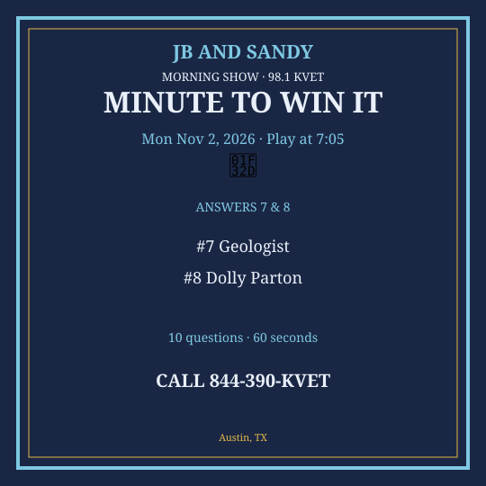
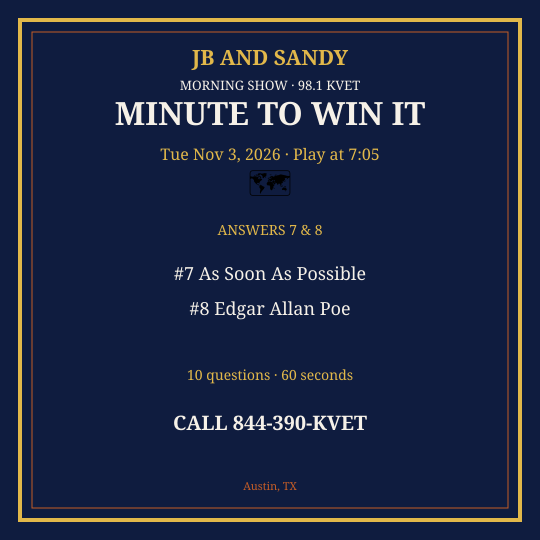
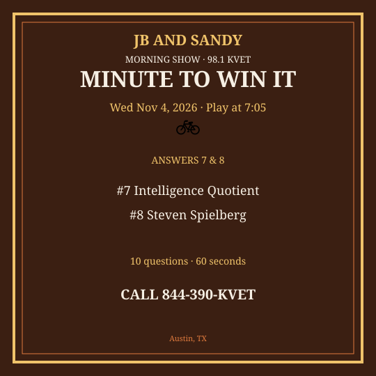
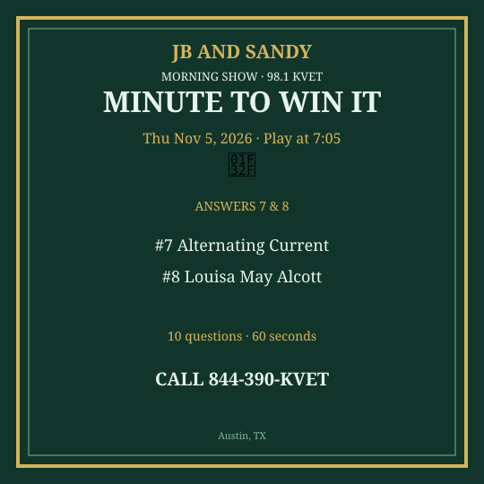
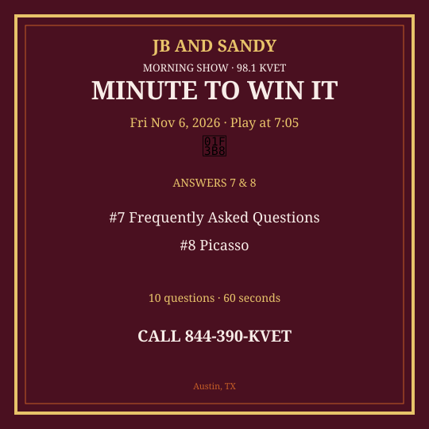

M2W Nov 2-6 2026
New packet. Questions get harder as you go. Graphics are Q7 & Q8 only.
Monday — Mon Nov 2, 2026
Question 1: What do you use to write a grocery list?
Answer: Pen / pencil
Question 2: How many weeks in a year, roughly?
Answer: 52
Question 3: What is the name of Austin’s university on the Forty Acres?
Answer: University of Texas
Question 4: What color is a ruby usually?
Answer: Red
Question 5: Which sport uses a hole-in-one?
Answer: Golf
Question 6: What is the capital of Germany?
Answer: Berlin
Question 7: What do we call a scientist who studies rocks?
Answer: Geologist
Question 8: Who sang “I Will Always Love You” as a country original?
Answer: Dolly Parton
Question 9: What is 16 + 9?
Answer: 25
Question 10: Which country is New Delhi the capital of?
Answer: India
Social card for Q7 & Q8 — download and post:
{kind=link}

Tuesday — Tue Nov 3, 2026
Question 1: What do you put in a sandwich first, usually?
Answer: Bread
Question 2: How many threes in a dozen?
Answer: Four
Question 3: What is the name of Austin’s famous barbecue wait line?
Answer: Franklin / la Barbecue
Question 4: What animal is known for black and white stripes?
Answer: Zebra
Question 5: Which planet has a moon named Titan?
Answer: Saturn
Question 6: What is bread made from, mainly?
Answer: Flour / wheat
Question 7: What does ASAP stand for?
Answer: As Soon As Possible
Question 8: Who wrote “The Raven”?
Answer: Edgar Allan Poe
Question 9: What is 5 cubed?
Answer: 125
Question 10: Which strait separates Spain from Morocco?
Answer: Strait of Gibraltar
Social card for Q7 & Q8 — download and post:
{kind=link}

Wednesday — Wed Nov 4, 2026
Question 1: What do you wear when it rains?
Answer: Raincoat / umbrella
Question 2: How many ounces in a pound?
Answer: 16
Question 3: What is the name of Texas A&M’s mascot?
Answer: Reveille
Question 4: What is 9 × 6?
Answer: 54
Question 5: Which country is home to the pyramids of Giza?
Answer: Egypt
Question 6: What is the center of the solar system?
Answer: The Sun
Question 7: What does IQ stand for?
Answer: Intelligence Quotient
Question 8: Who directed “E.T.”?
Answer: Steven Spielberg
Question 9: What is the next leap year after 2024?
Answer: 2028
Question 10: Which U.S. state is called the Grand Canyon State?
Answer: Arizona
Social card for Q7 & Q8 — download and post:
{kind=link}

Thursday — Thu Nov 5, 2026
Question 1: What do you put on a hamburger bun besides the burger?
Answer: Lettuce / tomato / condiments
Question 2: How many players on a soccer team on the field?
Answer: 11
Question 3: What is the name of Austin’s hockey-style minor team era — skip; what’s the UT stadium?
Answer: DKR / Darrell K Royal
Question 4: What color is an emerald?
Answer: Green
Question 5: Which country invented paper money first?
Answer: China
Question 6: What is the largest island in the world?
Answer: Greenland
Question 7: What does AC stand for in AC/DC electricity?
Answer: Alternating Current
Question 8: Who wrote “Little Women”?
Answer: Louisa May Alcott
Question 9: What is 18 ÷ 2?
Answer: 9
Question 10: Which mountain is the highest in North America?
Answer: Denali
Social card for Q7 & Q8 — download and post:
{kind=link}

Friday — Fri Nov 6, 2026
Question 1: What do you say when someone sneezes?
Answer: Bless you
Question 2: How many quarters in a dollar?
Answer: Four
Question 3: What is the name of Austin’s “keep it weird” slogan?
Answer: Keep Austin Weird
Question 4: What is 4 × 15?
Answer: 60
Question 5: Which country is the origin of the tango?
Answer: Argentina
Question 6: What is the process of water turning to vapor?
Answer: Evaporation
Question 7: What does FAQ stand for?
Answer: Frequently Asked Questions
Question 8: Who painted “Guernica”?
Answer: Picasso
Question 9: What year did the Wright brothers first fly?
Answer: 1903
Question 10: What is the capital of Portugal?
Answer: Lisbon
Social card for Q7 & Q8 — download and post:
{kind=link}
